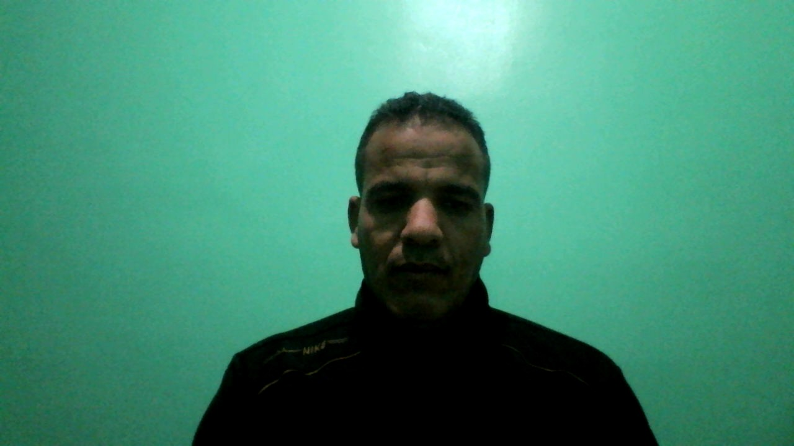

Curriculum Vitae
Miloud Bencheikh etudiant en master spécialisé sciences géomatique appliquées à la gestion des ressources naturelles et environnementales, FPT Taroudant
Mes expériences
- De 01/09/2005 à 31/08/2009: travail au compagnies de pêche maitime
- De 01/09/2010 à 31/07/2018: travail à l'enseignement secteur privé
- Le 04/09/2018 à Aujourd'hui: travail à l'enseignement secteur publique cycle primaire
Mes compétences
- Office Microsoft
- ArcGis,Google Earth
- Erdas imagine, INVI, Idrisi
- Hyfranplus, Surfer8, ORIGINE
- HTML5,CSS3
Mes formations
- Le 2001: Baccalauréat sciences expérimentales, à lycée qualifiant ibno soulaimane Roudani
- De 2001 à 2003: certificat CEUT des études universitaire en sciences physique
- De 2003 à 2005:Diplôme de pêche maritime
- le 2011: Diplôme DEUG université ibno Zohr
- Le 2012 : la licence en SMP à la faculté ibno zohr